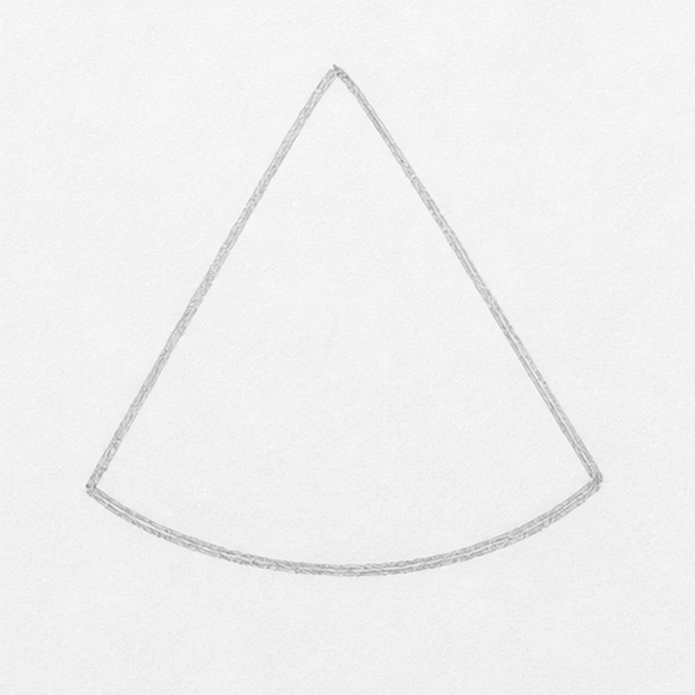
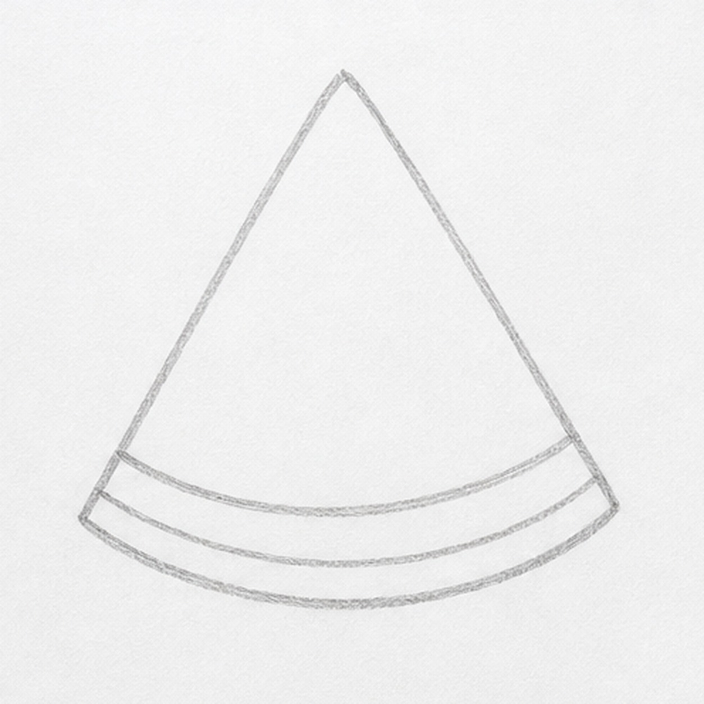
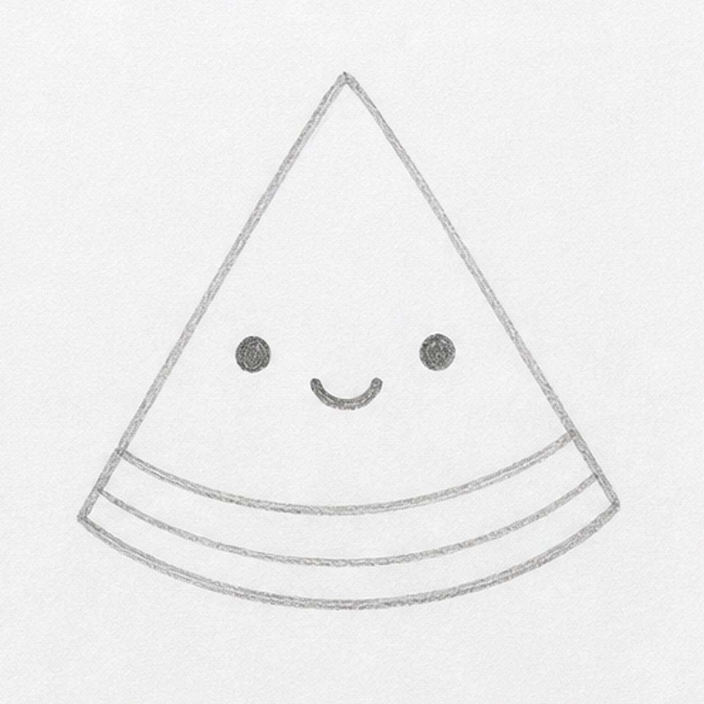
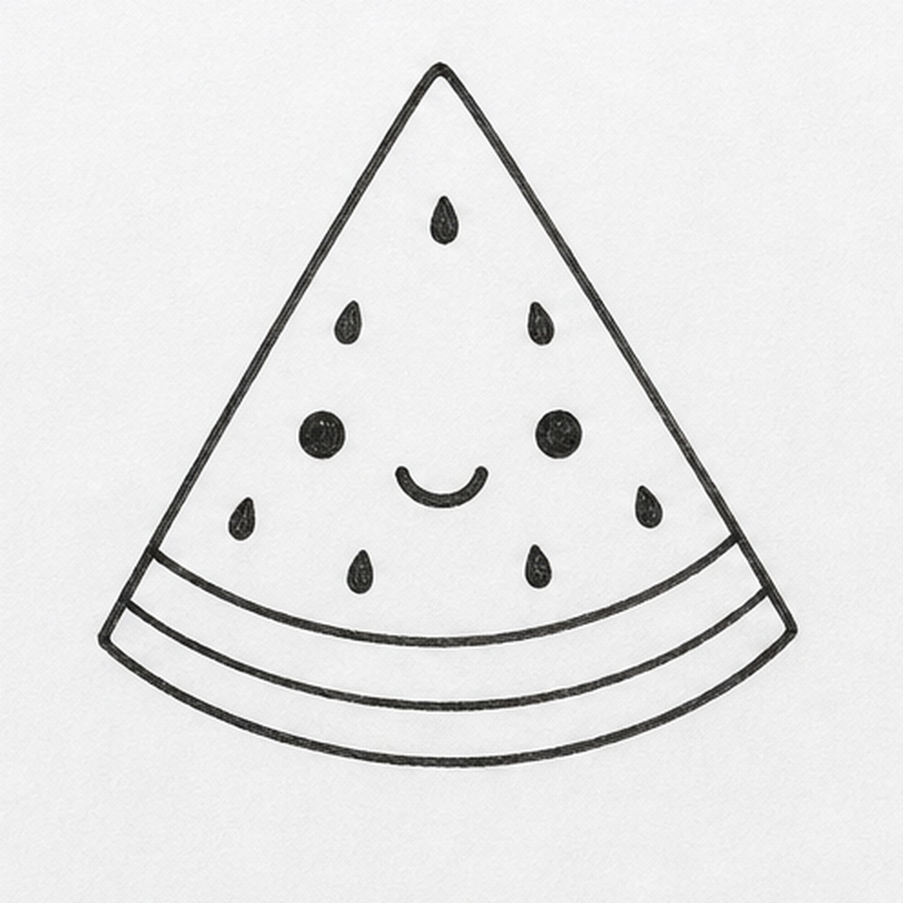
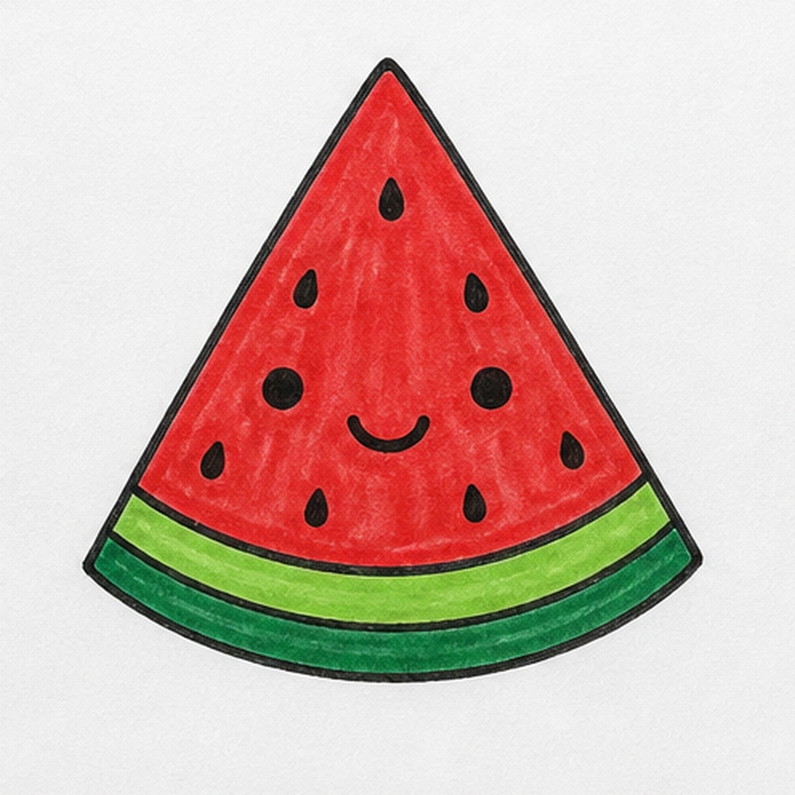

Felt-tip marker mode
Let's doodle a watermelon wedge
Treat this as one playful practice round: sketch the idea loosely, simplify the shapes, then commit with confident marker outlines and bright fills.
-
01

Start the wedge
Draw a wide triangle with a curved bottom edge, like a big slice sitting upright.
Doodle tip: Make the bottom curve gentle. A too-flat edge will look like a road sign instead of fruit.
-
02

Add the rind
Draw two curved bands along the bottom edge to separate the fruit, light rind, and dark outer rind.
Doodle tip: Echo the same curve three times. Matching bands make the wedge feel solid.
-
03

Draw the face
Add two dot eyes and a small curved smile in the red fruit area.
Doodle tip: Keep the face below the middle so there is still room for seeds above it.
-
04

Place the seeds
Scatter small teardrop seed shapes around the face, with a few high and a few low.
Doodle tip: Leave gaps between seeds. Crowding them together can hide the smile.
-
05

Fill the marker color
Fill the fruit red, color the upper rind light green, and fill the outer rind dark green.
Doodle tip: Use long strokes that follow the triangle. Visible marker texture is part of the charm.
-
06
Give it sticker edges
Thicken the wedge outline, seeds, face, and rind bands, then smooth the red and green fills without adding new seeds or props.
Doodle tip: Let the final outline be thick and confident. That is what makes the slice read as a sticker-like doodle.